Designed and fabricated a series of hand tools from first principles, refining geometry, materials, and construction methods through iterative builds.
Produced functional cutting tools with progressive improvements in ergonomics, edge retention, and overall finish. Each build informed the next.
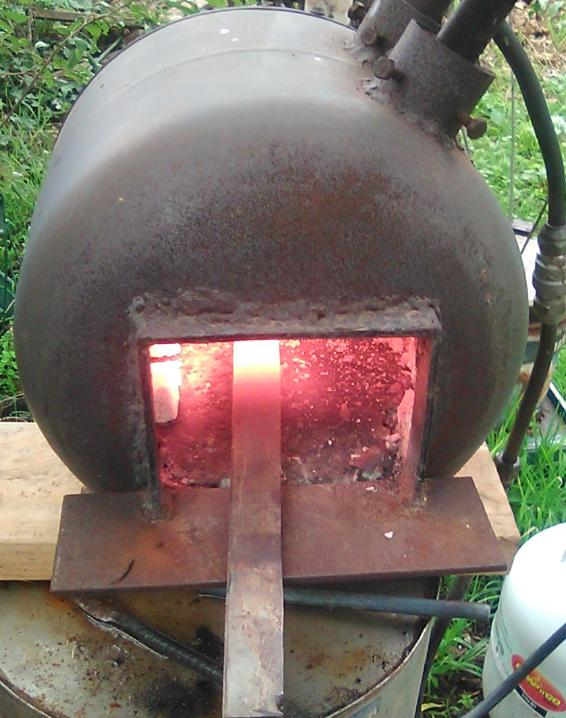
Gas forge constructed from repurposed gas cylinder. Provided sufficient and consistent heat for forming and shaping blades.
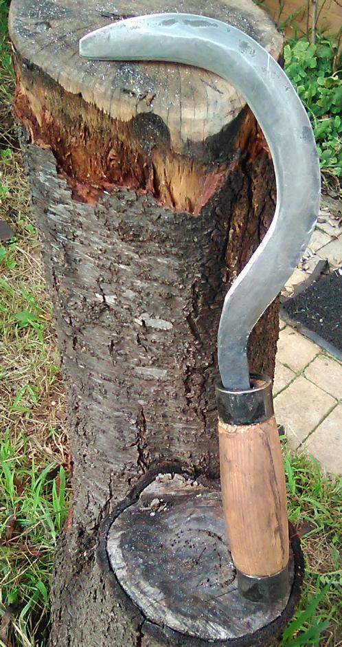
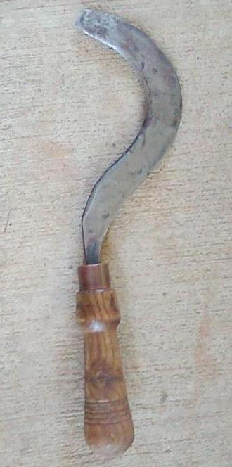
Early blade form after forging. Geometry not yet optimised. The handle of the second tool was somewhat refined but a little undersize. The geometry of the blade was in need of refinement.
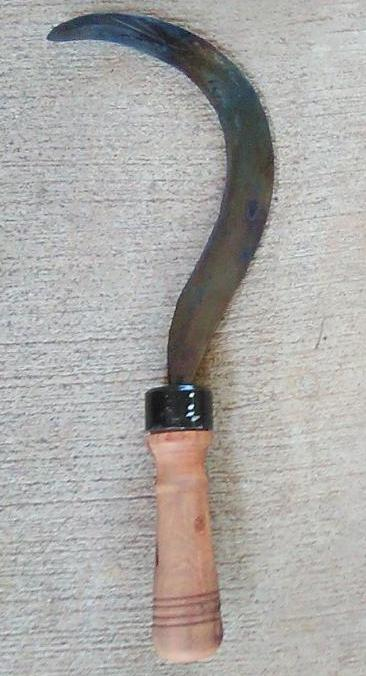
Initial completed and very serviceable tool
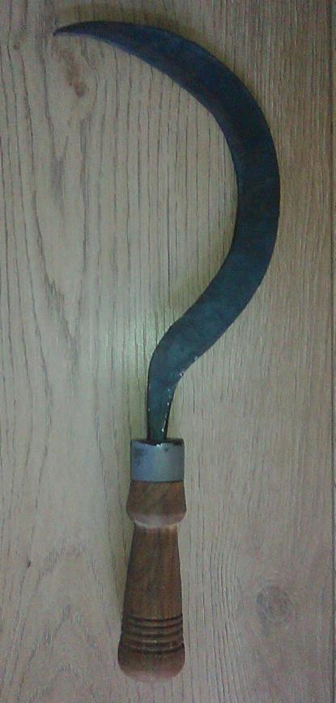
Improved blade curvature and edge profile following evaluation of earlier builds. Handle ergnomics in need of improvement to reduce risk of loss of grip during use.
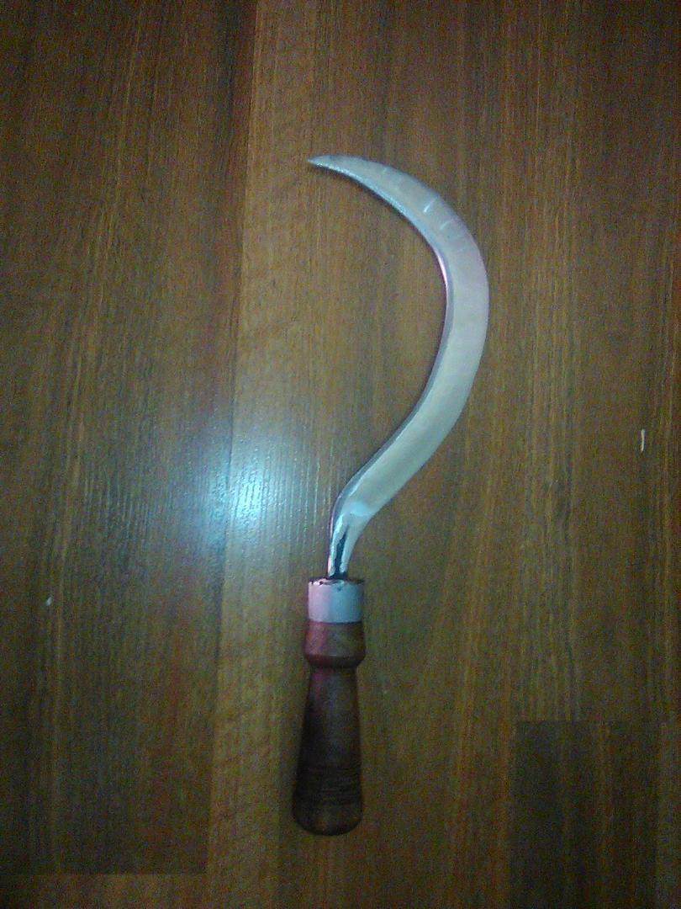
Surface finishing and polishing introduced to improve cutting performance and corrosion resistance.
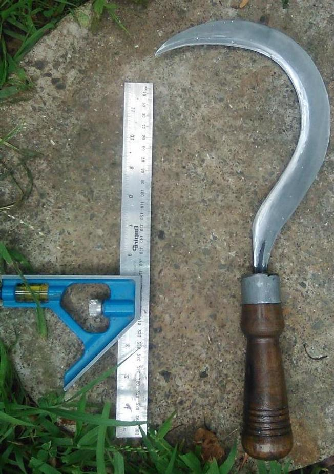
Final blade geometry. A square has been included for scale.
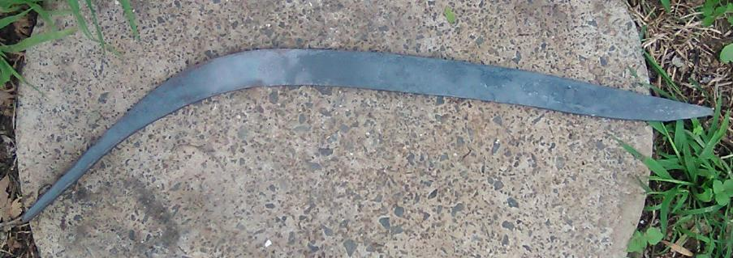
Blade roughly shaped and annealed ready for profiling.
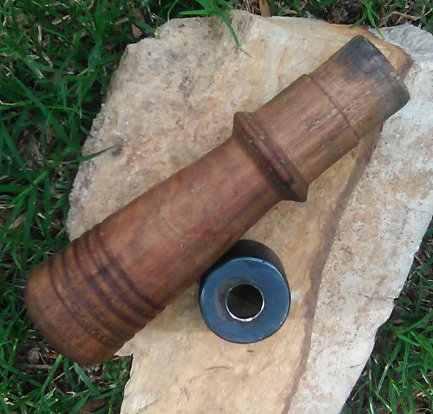
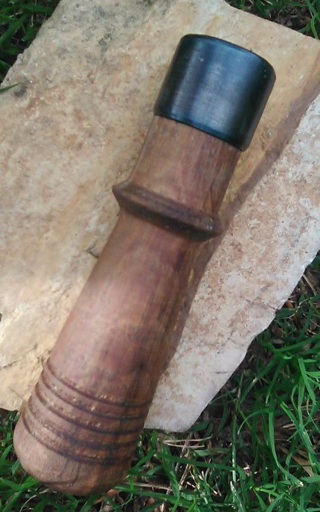
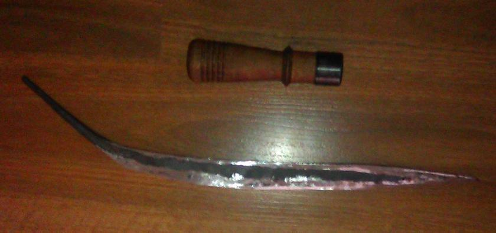
Rough blade and handle with ferrule fitted. The handles are pushed onto the tang, whilst it is hot, in order to seat it optimally. The process is repeated as the blade nears completion.
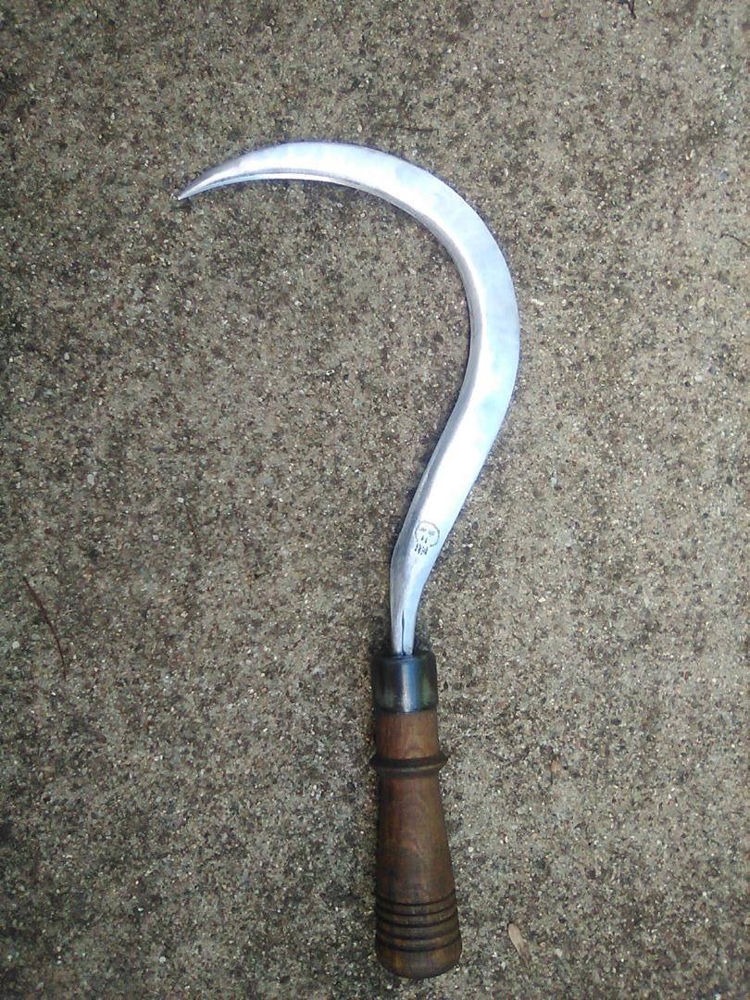
Completed sickle with refined handle design and proper blade geometry.
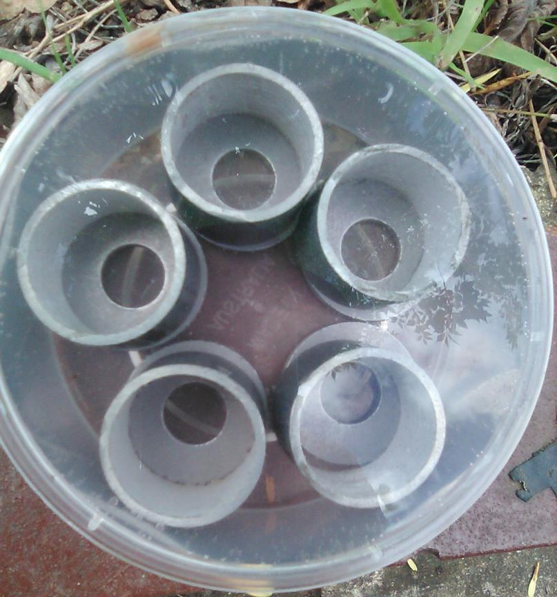
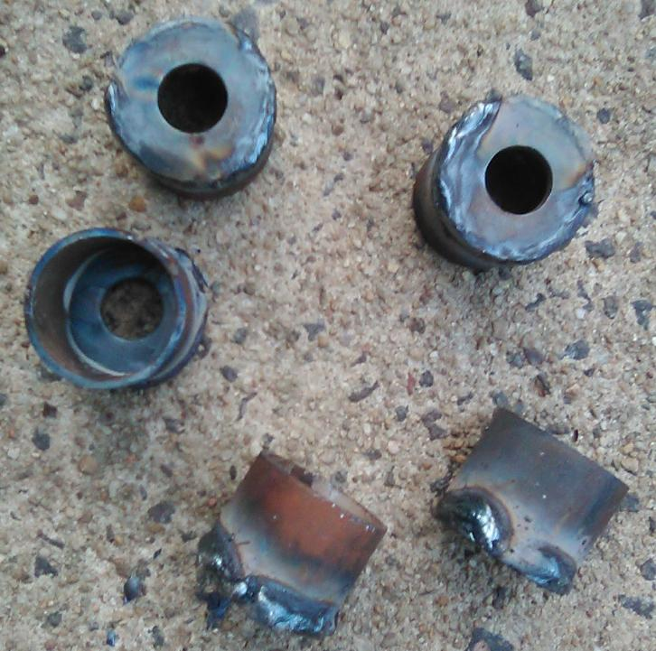
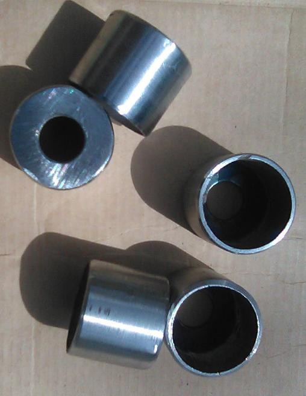
Ferrules fabricated from galvanised pipe and washers. Welded, cleaned, and heat treated.
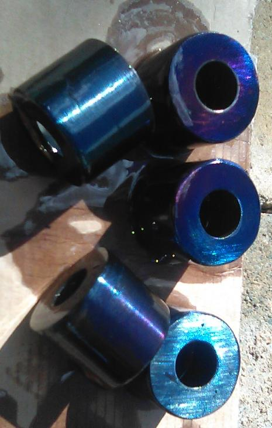
Heat treatment produced oxide finish ("blueing") for corrosion resistance.
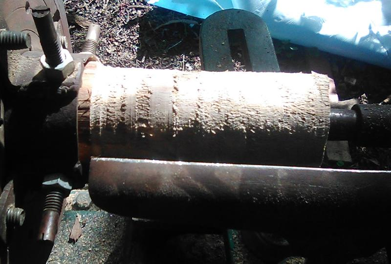
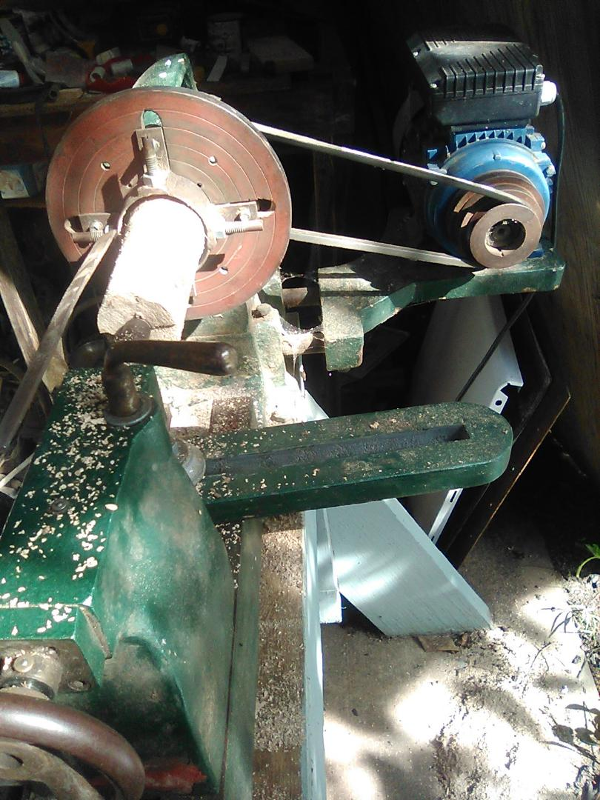
Initial handle shaping on lathe.
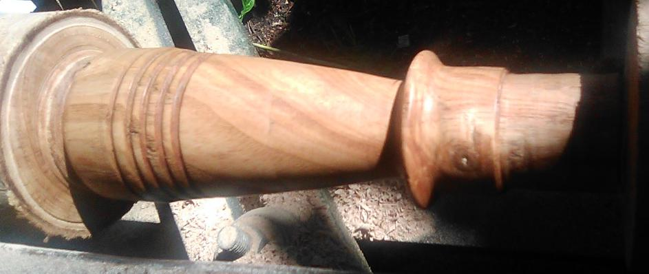
Refinement of grip profile based on handling.
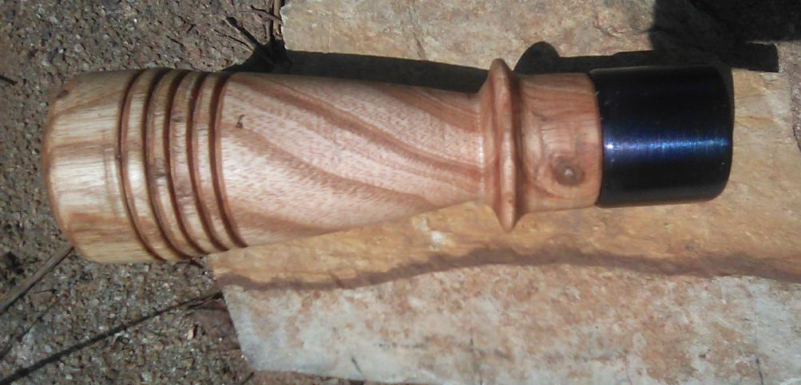
Completed handle with fitted ferrule.
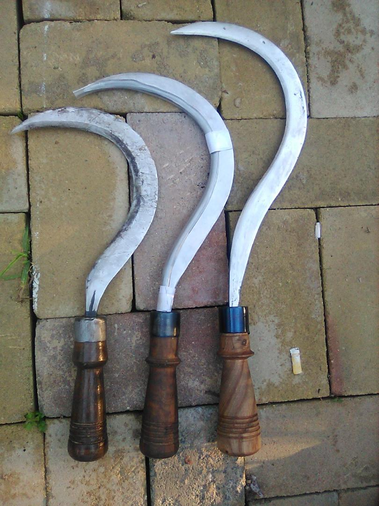
Progression of refinement.
Early builds established basic functionality but revealed limitations in blade curvature, edge geometry, and balance. Subsequent iterations focused on refining these aspects through controlled changes to profile and thickness.
Handle construction evolved alongside blade development. Ferrules were fabricated from readily available materials and heat treated to improve durability. Handle geometry was adjusted to improve grip and control during use.
The process reflects a practical approach to toolmaking: evaluate performance, identify limitations, and implement targeted improvements in subsequent builds.